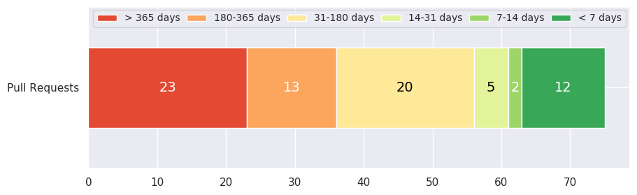

Welcome to OpenCV pull requests statistics page!
¶
Updated 2021-04-05 16:51:02 UTC
Current Pull Requests age distribution
¶

Pull Requests trend
¶
Pages
¶
Problematic pull requests
Stable reproducers
WIP
Problem: pr: needs test
Problem: incomplete
Problem: pr: Discussion Required
Age distribution
Overview
Current age distribution
Historical age distribution
Age distribution by categories
Age distribution by age categories
Pull Requests with age: < 7 days
Pull Requests with age: 7-14 days
Pull Requests with age: 14-31 days
Pull Requests with age: 31-180 days
Pull Requests with age: 180-365 days
Pull Requests with age: > 365 days
Changes distribution
Overview
Changes distribution between the modules
Changes distribution in absolute values
Categories distribution
Overview
Pull requests with auto assigned categories
OpenCV pull requests statistics
Navigation
Problematic pull requests
Age distribution
Changes distribution
Categories distribution
Related Topics
Documentation overview
Next:
Problematic pull requests
Quick search